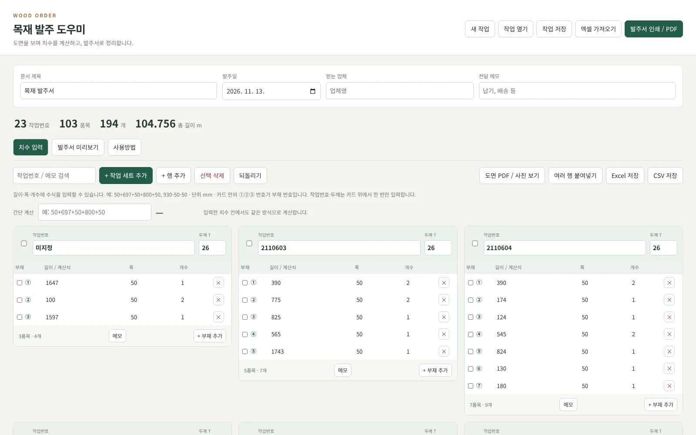
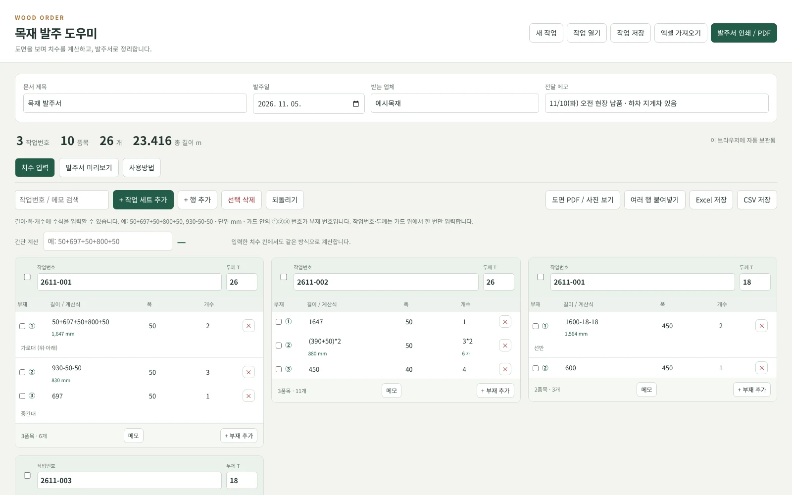
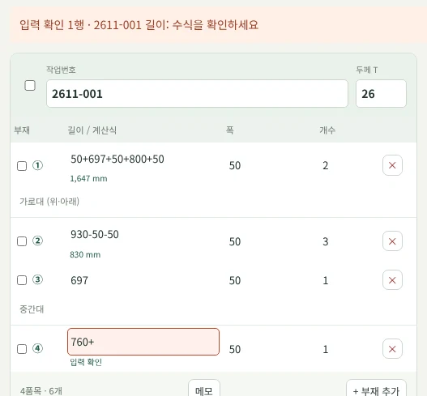
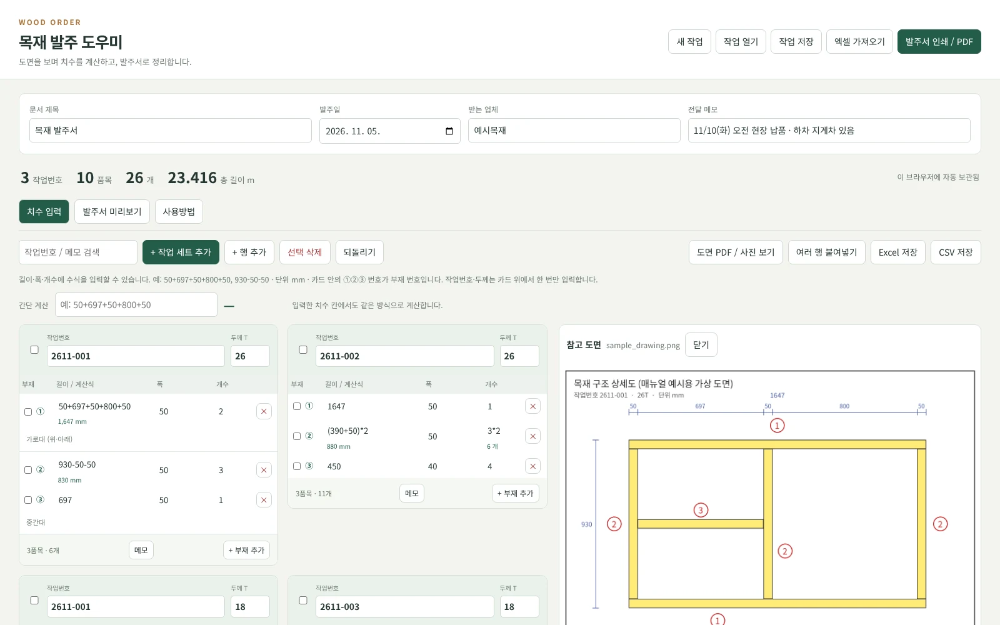
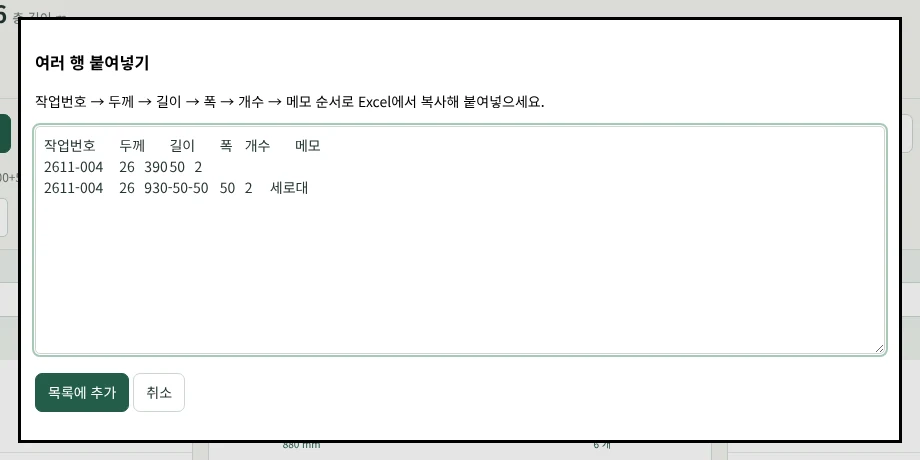
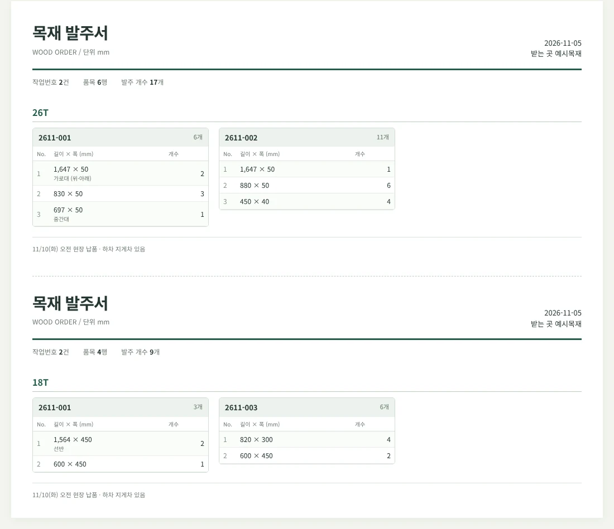
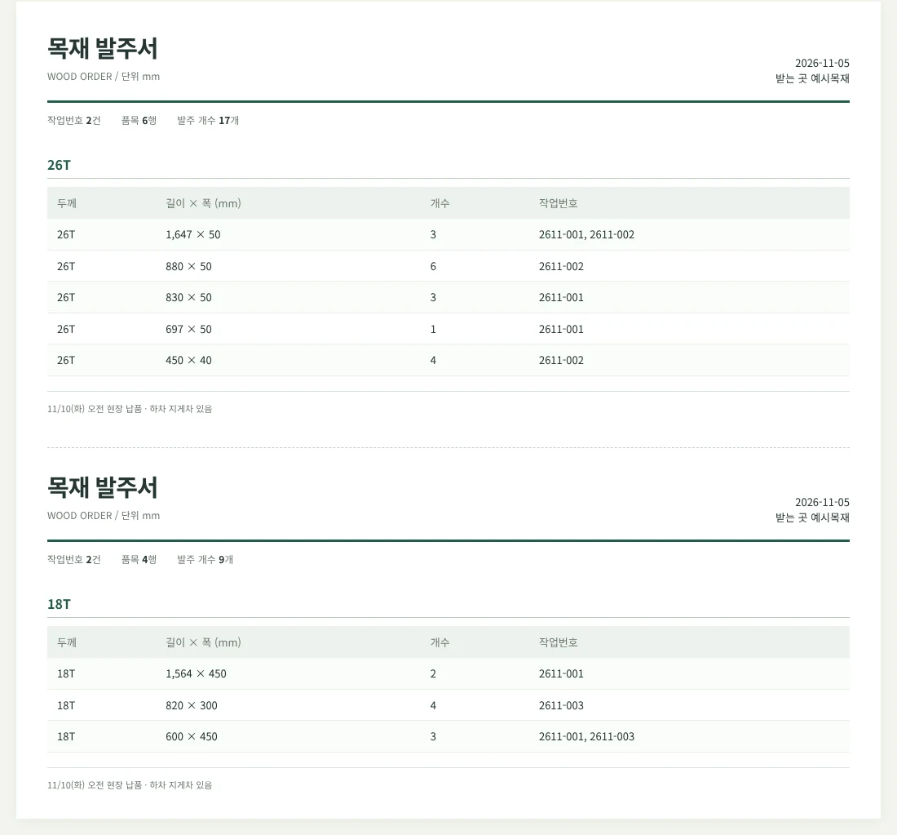
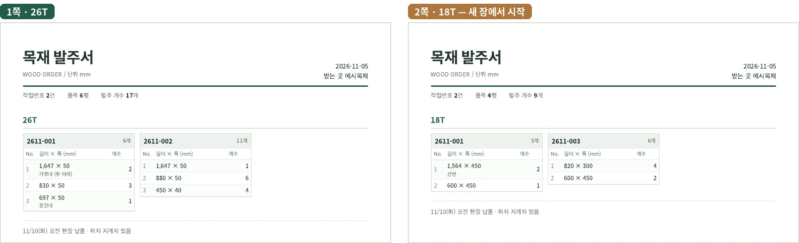
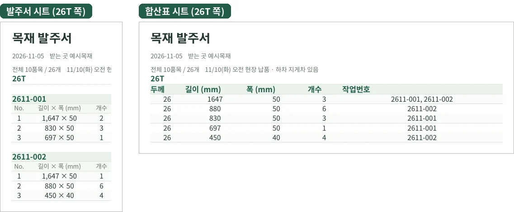

USER MANUAL · v1.2.0
목재계산 도우미
- 기준 버전v1.2.0
- 기준일2026-11-05
- 실행목재_발주_도우미_v1.2.html (Chrome·Edge)
- 필요없음 (설치·로그인·인터넷 불필요)
- 성격작업지시서 관리자와 별도인 독립 HTML 도구
목재계산 도우미는 브라우저에서 여는 HTML 파일 하나로 된 도구입니다. 화면 맨 위에는 목재 발주 도우미라고 나옵니다. 이 매뉴얼에서는 목재계산 도우미라고 부릅니다.
참고
아이칸 작업지시서 관리자 안에 있는 메뉴가 아닙니다. 관리자 프로그램과 따로, 목재_발주_도우미_v1.2.html 파일을 직접 열어 씁니다. 관리자의 .ikanwork 작업과도 연결되지 않습니다.
CHAPTER 01
이 도구로 하는 일
도면에 그려진 목재 부재를 사람이 보고 판단해서 재단 치수와 개수를 넣으면, 이 도구가 계산하고 발주서와 합산표로 정리합니다.
| 단계 | 하는 일 | 이 매뉴얼 |
|---|---|---|
| 도면 확인 | 도면 PDF·사진을 입력 화면 옆에 띄웁니다. | 7장 |
| 작업 세트 만들기 | 작업번호·두께별로 입력 카드를 만듭니다. | 4~5장 |
| 부재 입력 | ①②③ 부재마다 길이·폭·개수를 넣습니다. 계산식을 써도 됩니다. | 5~6장 |
| 출력 확인 | 작업번호별 발주서 또는 동일 규격 합산표로 봅니다. | 9장 |
| 업체 전달 | 인쇄·PDF 또는 Excel(발주서·합산표 두 시트)로 만듭니다. | 10~11장 |
| 작업 보관 | .wood.json 작업 파일로 저장해 다시 고칠 수 있게 둡니다. |
12장 |
길이·폭 칸에 50+697+50+800+50처럼 계산식을 넣을 수 있어서, 계산기로 따로 계산해 옮겨 적지 않아도 됩니다. 계산식은 작업 파일에 남고, 발주서에는 계산된 숫자만 나옵니다.
주의
도면을 자동으로 읽는 기능은 없습니다. 어느 부재가 몇 mm인지는 사람이 정합니다. 원자재 본수, 원장 배치, 로스율도 계산하지 않습니다(16장).
CHAPTER 02
실행과 첫 화면
2.1 실행하기
배포 ZIP을 받았다면 압축을 풉니다.
목재_발주_도우미_v1.2.html을 Chrome 또는 Edge로 엽니다. 더블클릭해서 다른 프로그램이 열리면 파일을 브라우저 창으로 끌어다 놓습니다.설치·로그인이 없고 인터넷도 필요하지 않습니다.
2.2 처음 열면 들어 있는 예시 자료
배포본에는 원본 엑셀 목재계산_정리_원본형식_v2.xlsx에서 가져온 103품목·194개가 예시로 들어 있습니다(26T·18T). 이 숫자는 예시 자료의 값일 뿐 정해진 값이 아닙니다.
새 발주서를 만들 때는 새 작업을 누릅니다. 예시 자료는 15장을 보세요.
참고
한 번 고친 뒤에는 브라우저에 자동 보관된 자료가 열립니다(12.3). 처음 예시 자료가 아니라 마지막으로 작업하던 내용이 보이는 것이 정상입니다.

- 1상단 집계작업번호 23 · 품목 103 · 194개 · 총 길이 m. 예시 자료의 값입니다.
- 2미지정 카드원본에 작업번호가 없던 3품목. 실제로 쓸 때 맞는 작업번호로 고칩니다.
- 3새 작업확인 후 빈 작업으로 시작합니다. 제목은 목재 발주서, 발주일은 오늘.
CHAPTER 03
화면 구성

- 1상단 메뉴새 작업 · 작업 열기 · 작업 저장 · 엑셀 가져오기 · 발주서 인쇄 / PDF.
- 2문서 정보문서 제목 · 발주일 · 받는 업체 · 전달 메모. 발주서 머리와 아래쪽에 나옵니다.
- 3상단 집계작업번호 수 · 품목(행) 수 · 개수 합계 · 총 길이 m(참고값). 오류 행은 개수·총 길이에서 빠집니다.
- 4자동 보관 표시고친 내용이 이 브라우저에 자동 보관됩니다. 장기 보관은 작업 저장으로.
- 5탭치수 입력 · 발주서 미리보기 · 사용방법.
- 6검색작업번호·메모로 입력 화면만 좁힙니다. 발주서·Excel·CSV는 늘 전체 자료.
- 7작업 세트 추가새 카드를 만듭니다. 임시 이름 `새 작업 1`을 실제 작업번호로 고칩니다.
- 8행 추가 · 선택 삭제 · 되돌리기되돌리기는 최대 30단계. 다시 실행 버튼은 없습니다.
- 9도면 PDF / 사진 보기도면을 카드 오른쪽에 띄웁니다(7장).
- 10붙여넣기 · Excel · CSV여러 행 붙여넣기 · Excel 저장(발주서·합산표 두 시트) · CSV 저장.
- 11간단 계산따로 쓰는 계산기. 결과가 부재 목록에 들어가지 않습니다.
- 12작업번호 · 두께카드 위쪽에서 한 번 입력. 고치면 그 카드의 부재 전체가 바뀝니다.
- 13부재 번호①②③은 카드 안의 지금 순서입니다. 지우면 다시 매겨집니다.
- 14계산 결과계산식을 넣으면 칸 아래에 결과가 나옵니다. 계산식은 그대로 남습니다.
- 15메모 · + 부재 추가메모는 이 카드의 빈 메모 칸을 펼칩니다(내용이 있는 메모는 늘 보임). + 부재 추가는 카드 끝에 한 줄을 더하며 작업번호·두께·폭을 이어받습니다.
- 16같은 작업번호, 다른 두께2611-001이라도 18T는 별도 카드입니다.
3.1 상단 메뉴
| 버튼 | 하는 일 |
|---|---|
| 새 작업 | 한 번 확인한 뒤 빈 작업을 시작합니다. 문서 제목은 목재 발주서, 발주일은 오늘이 됩니다. |
| 작업 열기 | 저장해 둔 .wood.json 작업 파일을 엽니다. 지금 목록을 바꾸기 전에 확인합니다. |
| 작업 저장 | 문서 정보·품목·계산식을 .wood.json 파일로 내려받습니다. |
| 엑셀 가져오기 | 지원하는 XLSX·CSV·TSV에서 품목을 읽어 옵니다(13장). |
| 발주서 인쇄 / PDF | 지금 고른 출력 양식으로 브라우저 인쇄 창을 엽니다(10장). |
3.2 문서 정보
| 칸 | 뜻 |
|---|---|
| 문서 제목 | 발주서 맨 위 제목입니다. |
| 발주일 | 발주서에 찍히는 날짜입니다. |
| 받는 업체 | 전달할 업체명입니다. 발주서에 받는 곳으로 나옵니다. |
| 전달 메모 | 납기·배송 같은 공통 메모입니다. 발주서 아래에 나옵니다. |
3.3 상단 집계
- 작업번호: 서로 다른 작업번호가 몇 개인지
- 품목: 입력한 부재 행 수
- 개: 오류 없는 품목의 개수 합계
- 총 길이 m: 품목마다
길이 × 개수를 더해 m로 바꾼 참고값
주의
입력 오류가 있는 행은 개·총 길이에서 빠집니다. 오류가 남아 있을 때의 집계를 최종 발주량으로 쓰지 마세요. 총 길이는 참고값이며 발주 수량을 대신하지 않습니다.
3.4 탭
| 탭 | 쓰는 곳 |
|---|---|
| 치수 입력 | 작업번호별 카드에서 부재를 넣고 고칩니다. |
| 발주서 미리보기 | 작업번호별 발주서나 동일 규격 합산표를 확인합니다. |
| 사용방법 | 프로그램 안의 짧은 안내입니다. |
CHAPTER 04
빠른 시작 — 한 건을 발주서까지
기존 작업을 고치려면 작업 열기, 새로 만들려면 새 작업을 누릅니다.
문서 제목·발주일·받는 업체·전달 메모를 넣습니다.
필요하면 도면 PDF / 사진 보기로 도면을 옆에 띄웁니다(7장).
+ 작업 세트 추가를 눌러 카드를 만듭니다.
카드 위쪽에 작업번호와 두께를 넣습니다.
도면의 ①, ②, ③ 부재를 보면서 길이·폭·개수를 넣습니다.
같은 작업의 다음 부재는 카드 아래 + 부재 추가로 넣습니다.
빨간 입력 오류 안내가 보이면 고칩니다(6.3).
발주서 미리보기에서 작업번호별 발주서와 합산표를 확인합니다.
발주서 인쇄 / PDF 또는 Excel 저장으로 업체에 보낼 자료를 만듭니다.
작업 저장으로 다시 고칠 때 쓸
.wood.json파일을 따로 보관합니다.
팁
업체에 보내는 파일(PDF·Excel)과 나중에 다시 고칠 파일(.wood.json)은 다릅니다. 둘 다 저장해 두세요(12.1).
CHAPTER 05
작업 카드로 입력하기
5.1 카드가 묶이는 기준
입력 카드 하나는 작업번호와 두께가 같은 행의 묶음입니다. 같은 작업번호라도 26T와 18T가 있으면 카드가 두 장입니다.
| 고치는 곳 | 바뀌는 범위 |
|---|---|
| 카드 위쪽의 작업번호·두께 | 그 카드에 든 부재 전체 |
| 부재 줄의 길이·폭·개수 | 그 부재 한 줄만 |
주의
카드 위쪽의 작업번호나 두께를 다른 카드와 같게 고치면 두 카드가 하나로 합쳐져 보입니다. 부재 하나만 다른 두께로 옮기는 칸은 없습니다. 이때는 그 부재를 지우고 맞는 카드에 다시 넣으세요.
5.2 카드 안의 칸
| 칸 | 넣는 법 |
|---|---|
| 작업번호 | 카드 위쪽. 숫자가 아니어도 됩니다(예: 2611-001). |
| 두께 T | 카드 위쪽. 26, 18처럼 숫자만 넣습니다. T는 화면이 붙여 줍니다. |
| 부재 | ①~⑳, 21번째부터 (21)처럼 표시됩니다. 직접 넣는 칸이 아닙니다. |
| 길이 / 계산식 | mm 길이 또는 계산식 |
| 폭 | mm 폭 또는 계산식 |
| 개수 | 양의 정수 또는 결과가 양의 정수인 계산식(예: 3*2) |
| 메모 | 부재별 선택 입력. 카드 아래 메모 버튼으로 빈 메모 칸을 펼칩니다. 내용이 있는 메모는 항상 보입니다. |
카드 아래 왼쪽에는 그 카드의 품목 수 · 개수 합계가 나옵니다.
5.3 부재 번호는 지금 순서입니다
①②③은 카드 안에서 지금 몇 번째 줄인지를 나타냅니다. 부재를 지우면 남은 줄의 번호가 다시 매겨집니다. 도면 번호와 맞추려면 도면 순서대로 넣으세요.
참고
입력 화면은 ①②③처럼 동그라미 번호이고, 발주서 표의 No.는 1·2·3입니다.
5.4 화면 폭에 따른 배치
넓은 화면은 카드 3개, 중간 폭은 2개, 좁은 화면은 1개씩 가로로 놓입니다. 도면을 옆에 띄워 입력 칸이 좁아지면 저절로 줄어듭니다. 열 수를 고르는 버튼은 없습니다.
CHAPTER 06
부재 추가·삭제와 계산식
6.1 추가·삭제·되돌리기
| 버튼 | 하는 일 |
|---|---|
| + 작업 세트 추가 | 새 카드를 만듭니다. 이름은 새 작업 1 같은 임시 이름이므로 실제 작업번호로 고칩니다. 빈 부재 한 줄이 함께 생깁니다. |
| 카드의 + 부재 추가 | 그 카드 마지막 부재 뒤에 줄을 더합니다. 작업번호·두께와 마지막 부재의 폭을 이어받고, 길이는 빈칸, 개수는 1입니다. |
| 위쪽 + 행 추가 | 체크한 행 가운데 목록상 마지막 행(체크가 없으면 전체 마지막 행)의 작업번호·두께·폭을 이어받습니다. 원하는 작업에 넣을 때는 카드의 + 부재 추가가 더 확실합니다. |
| 부재 오른쪽 × | 그 부재 한 줄을 지웁니다. |
| 행 체크 + 선택 삭제 | 체크한 부재를 한꺼번에 지웁니다. 카드 위쪽 체크는 그 카드에 보이는 부재를 모두 체크합니다. |
| 되돌리기 | 최근 편집·추가·삭제·불러오기를 최대 30단계까지 되돌립니다. 다시 실행 버튼은 없습니다. |
참고
행 체크는 지우기용입니다. 체크한 품목만 골라 인쇄하는 기능은 없습니다. 발주서에는 언제나 전체 품목이 나옵니다.
6.2 계산식 쓰기
길이·폭·개수(두께도) 칸에 계산식을 넣으면 칸 아래에 결과가 작게 나옵니다. 계산식은 그대로 남아서 언제든 고칠 수 있습니다. 숫자만 넣으면 아래 결과는 나오지 않습니다.
- 쓸 수 있는 것:
+-*/( ), 소수 - 곱하기는
×, 나누기는÷로 써도 됩니다. - Excel 셀 주소(
A1)나SUM같은 함수는 쓸 수 없습니다.
| 입력 | 결과 | 예 |
|---|---|---|
50+697+50+800+50 |
1,647 | 도면의 여러 구간 더하기 |
930-50-50 |
830 | 전체 길이에서 양쪽 빼기 |
(390+50)*2 |
880 | 괄호와 곱하기 |
3*2 |
6 | 개수 칸에서 |
예: 위 계산식은 사용법을 보여 주는 예입니다. 어떤 구간을 더하고 뺄지는 도면마다 사람이 정합니다. 모든 도면에 맞는 목재 설계 공식이 아닙니다.
위쪽 간단 계산 칸은 따로 쓰는 계산기입니다. 여기 결과는 부재 목록에 들어가지 않습니다. 발주할 치수는 카드의 칸에 넣으세요.

- 1입력 확인 띠오류 행 수와 내용(작업번호 · 칸 · 이유)이 나옵니다.
- 2계산 결과`50+697+50+800+50` → 1,647 mm
- 3오류 칸고치면 바로 사라집니다. 오류가 남아 있으면 인쇄·Excel·CSV 저장 전에 안내합니다.
이 체험은 스크립트가 켜진 브라우저에서 동작합니다.
6.3 입력 오류
| 기준 | 오류가 되는 경우 |
|---|---|
| 작업번호 | 비어 있을 때 |
| 두께·길이·폭 | 0이거나 음수일 때 |
| 개수 | 정수가 아니거나 1~100,000 밖일 때 |
| 계산식 | 0으로 나누기, 괄호가 맞지 않음, 쓸 수 없는 글자, 250자 넘음 |
오류가 있는 칸은 붉게 바뀌고 아래에 입력 확인이 나옵니다. 계산식 위쪽의 붉은 띠에는 오류 행 수와 내용이 나옵니다. 760+처럼 계산식을 아직 다 쓰지 않았을 때도 잠깐 오류로 보입니다.
주의
오류가 남아 있으면 발주서 인쇄 / PDF, Excel 저장, CSV 저장을 누를 때 먼저 고치라고 안내합니다. 미리보기에서는 오류 행이 빠져 보일 수 있으니, 오류를 모두 고친 뒤 품목 수를 확인하세요.
계산 결과는 소수 8자리 정도까지 다룹니다. 아주 긴 소수까지 정확히 맞추는 계산기는 아닙니다.
CHAPTER 07
도면을 보면서 입력하기

- 1참고 도면고른 파일 이름이 나옵니다. 도면은 작업 파일에 저장되지 않습니다.
- 2닫기도면 칸을 접습니다.
- 3카드 배치도면 칸만큼 좁아지면 3열 → 2열 → 1열로 저절로 바뀝니다.
도면 PDF / 사진 보기를 누릅니다.
참고할 PDF나 사진 파일을 고릅니다.
입력 카드 오른쪽에 도면이 나오고, 참고 도면 옆에 파일 이름이 나옵니다.
도면의 부재 번호와 카드의 ①②③을 맞춰 가며 치수를 넣습니다.
다 보면 닫기로 도면 칸을 접습니다.
PDF 확대·쪽 넘기기는 브라우저의 PDF 보기 기능을 씁니다. 화면이 좁으면 도면 칸이 카드 아래로 내려갈 수 있습니다.
참고
도면은 사람이 보는 참고용입니다. 선·번호·형광 표시를 읽어 치수를 계산하지 않으며, 도면 원본도 바꾸지 않습니다. 도면 파일은 작업 파일에 저장되지 않으므로 다음에 열 때 다시 고릅니다.
CHAPTER 08
검색과 여러 행 붙여넣기
8.1 작업번호·메모 검색
작업번호 / 메모 검색 칸에 글자를 넣으면 입력 화면에 맞는 행만 보입니다.
- 검색 중에도 부재 번호는 그 작업 안의 원래 순서대로 나옵니다.
- 검색 중 카드 위쪽 체크는 지금 보이는 행만 체크합니다.
참고
검색은 입력 화면만 좁힙니다. 발주서·Excel·CSV에는 언제나 전체 자료가 나옵니다.
8.2 Excel에서 여러 행 붙여넣기

- 1붙여넣는 곳작업번호 → 두께 → 길이 → 폭 → 개수 → 메모 순서, 탭으로 구분.
- 2목록에 추가지금 목록 뒤에 더합니다. 틀린 줄이 있으면 아래에 줄 번호가 나옵니다.
여러 행 붙여넣기를 누릅니다.
Excel에서 아래 순서의 열을 복사해 붙여넣습니다.
목록에 추가를 누릅니다.
| 열 | 1 | 2 | 3 | 4 | 5 | 6 |
|---|---|---|---|---|---|---|
| 항목 | 작업번호 | 두께 | 길이 | 폭 | 개수 | 메모(선택) |
| 예 | 2110603 | 26 | 390 | 50 | 2 |
- Excel에서 복사하면 열은 탭으로 나뉩니다.
- 첫 줄이
작업번호로 시작하는 제목 줄이면 건너뜁니다. - 계산식도 붙여넣을 수 있습니다. 두께 뒤의
T는 지웁니다. - 붙여넣은 줄을 모두 검사한 뒤 넣습니다. 한 줄이라도 틀리면 창 아래에 몇 번째 줄인지 나오며, 고쳐서 다시 누릅니다.
참고
붙여넣기는 지금 목록 뒤에 더합니다. 13장의 엑셀 가져오기는 목록을 바꿉니다.
CHAPTER 09
발주서 미리보기
9.1 출력 양식
발주서 미리보기 탭의 출력 양식에서 고릅니다.
| 양식 | 내용 |
|---|---|
| 작업번호별 발주서 | 두께별로 나누고, 작업번호마다 카드에 No.·길이 × 폭·개수를 보여 줍니다. 카드 제목 줄에 작업번호와 그 작업의 개수 합계가 나옵니다. |
| 동일 규격 합산표 | 두께·길이·폭이 같은 품목을 합쳐 개수와 관련 작업번호를 보여 줍니다. |
발주서 위쪽에는 문서 제목, 발주일, 받는 곳, 그 두께의 작업번호 수·품목 수·발주 개수가 나오고, 아래에는 전달 메모가 나옵니다.

- 1두께 구분두께마다 따로 시작합니다. 인쇄하면 새 장입니다.
- 2작업 카드작업번호와 그 작업의 개수 합계.
- 3품목 메모품목 메모 표시를 켜면 치수 아래에 나옵니다.
- 4전달 메모문서 정보의 공통 메모.
9.2 합산 기준
- 두께·길이·폭이 모두 같은 품목의 개수를 더합니다.
- 작업번호가 달라도 규격이 같으면 합쳐집니다. 관련 작업번호는 모두 적힙니다.
- 길이 500·폭 50과 길이 50·폭 500은 다른 규격으로 봅니다.
- 작업번호별 발주서에서는 같은 규격이 여러 번 나와도 입력한 줄 그대로 둡니다.

- 1합산 개수두께·길이·폭이 모두 같은 품목만 합칩니다.
- 2관련 작업번호합쳐진 작업번호가 모두 적힙니다.
9.3 줄 색과 두께별 장
- 표의 1·3·5번째 같은 홀수 줄에 아주 옅은 초록(
#FAFDF9)이 들어갑니다. 거의 흰색에 가까운 색이라 화면에서 잘 안 보일 수 있습니다. 화면·인쇄·Excel에 모두 들어갑니다. - 26T와 18T처럼 두께가 바뀌면 새 장에서 시작합니다. 화면에서는 점선으로 나뉩니다.
- 한 두께의 내용이 많으면 여러 장으로 이어집니다. 한 두께가 꼭 한 장에 들어가는 것은 아닙니다.

9.4 메모 표시
| 메모 | 발주서에서 |
|---|---|
| 부재별 메모 | 품목 메모 표시를 켜면 치수 아래에 나오고, 끄면 숨깁니다. |
| 전달 메모 | 문서 정보의 공통 메모로, 발주서 아래에 늘 나옵니다. |
참고
입력 카드의 메모 버튼은 입력 칸을 펼치는 버튼이고, 품목 메모 표시는 출력에 넣을지 고르는 칸입니다.
CHAPTER 10
인쇄와 PDF 저장
출력 양식을 고르고 내용과 개수를 확인합니다.
발주서 인쇄 / PDF를 누릅니다(Ctrl+P).
브라우저 인쇄 창에서 프린터를 고르거나 PDF로 저장을 고릅니다.
A4 세로·배율 100%로 확인합니다.
머리글과 바닥글을 끄면 파일 주소·브라우저 날짜가 찍히지 않습니다.
옅은 홀수 줄 색을 인쇄에 남기려면 배경 그래픽을 켭니다. 이름은 브라우저마다 조금 다를 수 있습니다.
참고
PDF가 정해진 폴더에 저절로 저장되지 않습니다. 저장 위치는 인쇄 창에서 고릅니다.
화면 미리보기와 Excel은 각자 따로 배치하므로, 같은 품목이라도 쪽 수와 카드 위치까지 똑같지는 않을 수 있습니다.
CHAPTER 11
Excel 저장과 CSV 저장
11.1 Excel 저장
치수 입력 탭의 Excel 저장을 누르면 .xlsx 파일을 내려받습니다. 지금 보고 있는 양식만이 아니라 두 시트를 함께 만듭니다.
| 시트 | 내용 |
|---|---|
| 발주서 | 작업번호별 카드 배치, No.·길이 × 폭·개수, 두께 구분. 품목 메모 표시가 켜져 있으면 치수 옆에 메모 |
| 합산표 | 두께·길이·폭별 합산 개수와 관련 작업번호 |
- 계산식이 아니라 계산 결과를 넣습니다. Excel 수식으로 옮기지 않습니다.
- 개수와 합산표의 치수는 숫자 칸입니다. 발주서 시트의
길이 × 폭은 보기용 글자입니다. - 홀수 줄 색과 두께가 바뀔 때 쪽 나눔이 들어갑니다.
- 발주서 시트는 A4 세로로 인쇄되게 설정되어 있고, 내용이 많으면 다음 장으로 이어집니다.
주의
Excel에서 고친 내용은 도우미로 돌아오지 않습니다. 다시 고칠 때는 .wood.json을 여세요. 내보낸 Excel 발주서를 엑셀 가져오기로 다시 읽어 작업을 이어 갈 수는 없습니다.
부재 메모가 길면 발주서 시트의 길이 × 폭 칸에 다 보이지 않을 수 있습니다. 업체에 보내기 전에 Excel에서 한 번 열어 확인하세요.

11.2 CSV 저장
CSV 저장은 작업번호·두께·길이·폭·개수·메모의 단순 목록입니다. Excel로 열 수 있지만 카드 모양·줄 색·쪽 나눔은 없습니다. 숫자는 계산 결과이고, 부재 메모는 품목 메모 표시와 상관없이 목록에 들어갑니다.
11.3 파일 이름
작업 저장·Excel·CSV·수정 내용 포함 HTML의 기본 이름은 발주일_문서제목 뒤에 확장자를 붙인 꼴입니다.
예: 2026-11-05_목재 발주서.xlsx
저장 위치와 같은 이름 파일 처리는 브라우저의 다운로드 설정을 따릅니다.
CHAPTER 12
작업 저장·열기와 자동 보관
12.1 목적에 맞는 파일
| 파일 | 쓰는 곳 | 계산식 다시 고치기 |
|---|---|---|
.wood.json |
작업을 다시 열어 고치기, 다른 PC로 옮기기 | 됨 |
수정 내용 포함 .html |
지금 자료가 든 도우미 파일째 보관 | 됨 |
.xlsx |
업체 전달, Excel로 확인·인쇄 | 안 됨 (결과 숫자만) |
.csv |
단순 품목 목록 전달 | 안 됨 (결과 숫자만) |
.pdf |
모양을 확정해 전달·인쇄 | 안 됨 |
12.2 작업 저장과 작업 열기
작업 저장(Ctrl+S)은 다음을 .wood.json에 담습니다.
- 문서 정보(제목·발주일·업체·전달 메모)
- 부재 목록과 입력한 계산식, 부재 메모
- 출력 양식 선택, 품목 메모 표시 설정
도면 파일, 행 체크 상태, 되돌리기 기록, 간단 계산 칸은 저장되지 않습니다. 도면은 필요할 때 다시 고릅니다.
작업 열기로 파일을 고르면 지금 목록을 바꿀지 묻고, 저장된 작업 전체를 엽니다. 지금 목록 뒤에 더하는 기능이 아닙니다.
12.3 브라우저 자동 보관
고친 내용은 지금 쓰는 브라우저에 자동으로 보관됩니다. 화면 위쪽 오른쪽에 이 브라우저에 자동 보관됨이 나옵니다.
주의
HTML 파일 위치나 이름을 바꾸거나, 다른 브라우저·다른 PC에서 열거나, 브라우저 데이터를 지우면 자동 보관 자료가 이어지지 않을 수 있습니다. 오래 보관하거나 PC를 옮길 때는 반드시 작업 저장을 쓰세요.
자동 보관은 원본 엑셀에 저장하거나 서버에 백업하는 기능이 아닙니다. 내려받은 작업 파일을 자동으로 덮어쓰지도 않습니다.
12.4 수정 내용 포함 HTML 저장
발주서 미리보기 탭의 수정 내용 포함 HTML 저장은 지금 자료가 들어 있는 도우미 HTML을 내려받습니다. 그 파일을 열면 저장한 자료로 시작합니다. 도면 파일은 들어 있지 않습니다.
12.5 새 버전으로 자료 옮기기
쓰던 버전에서 작업 저장을 누릅니다.
새 버전 HTML을 엽니다.
작업 열기로 저장한
.wood.json을 엽니다.
지금 버전은 이전 버전의 형식1 작업 파일을 읽을 수 있습니다. HTML만 새 파일로 바꾸면 브라우저에 남은 이전 자료가 저절로 넘어온다고 기대하지 마세요.
CHAPTER 13
엑셀 가져오기
13.1 읽을 수 있는 형식
원본 엑셀처럼 B:F / H:L / N:R 세 묶음에 작업번호별 목록이 있는 XLSX
A열부터
작업번호, 두께, 길이, 폭, 개수, 메모가 있는 간단 표 XLSX. 첫 줄 A열 제목이작업번호여야 합니다.간단 표와 같은 열 순서의 CSV·TSV
13.2 가져오기 순서
엑셀 가져오기를 누르고 파일을 고릅니다.
시트가 여럿이면 가져올 시트 번호를 묻습니다. 목록의 번호를 넣습니다.
가져올 품목 수를 확인하고 확인을 누릅니다.
가져오면 지금 품목 목록을 바꿉니다. 문서 제목·발주일·받는 업체·전달 메모는 그대로 둡니다. 원본 엑셀은 바꾸지 않습니다.
주의
모든 Excel 양식을 읽지는 않습니다. 도우미에서 내보낸 카드형 발주서 XLSX도 작업 파일처럼 다시 읽을 수 없습니다. 작업을 이어 가려면 .wood.json을 쓰세요.
읽기 오류나 지원하지 않는 압축 방식 안내가 나오면 최신 Chrome·Edge로 다시 해 보거나, Excel에서 간단 표로 정리해 CSV로 저장한 뒤 가져옵니다.
13.3 파일 크기 기준
- 작업 파일·가져오기 파일: 20MB 이하
- 작업 열기·간단 표·붙여넣기: 최대 10,000행
자료가 많으면 화면이 느려질 수 있습니다.
CHAPTER 14
단축키
| 누르는 키 | 동작 |
|---|---|
| Ctrl+S | 작업 저장 |
| Ctrl+P | 발주서 인쇄 / PDF |
| 부재의 길이·폭·개수 칸에서 Enter | 같은 카드의 다음 칸으로 이동 |
| 카드 마지막 개수 칸에서 Enter | 그 카드에 부재 한 줄 추가 |
| 카드 안에서 Ctrl+Enter | 그 카드에 부재 추가 |
| 카드 밖에서 Ctrl+Enter | 위쪽 + 행 추가와 같음 |
참고
작업을 되돌릴 때는 화면의 되돌리기 버튼을 쓰세요. 작업 되돌리기·다시 실행용 단축키는 따로 정해져 있지 않습니다.
CHAPTER 15
기본 예시 자료
배포본에는 원본 목재계산_정리_원본형식_v2.xlsx의 103품목·194개가 들어 있습니다(26T·18T).
원본에 작업번호가 없던 맨 앞 세 품목은 작업번호를 미지정으로 남겼습니다.
| 길이 × 폭 | 개수 |
|---|---|
| 1647 × 50 | 1 |
| 100 × 50 | 2 |
| 1597 × 50 | 1 |
실제로 쓸 때는 맞는 작업번호를 넣으세요. 도우미가 작업번호를 짐작해서 채운 것이 아닙니다. 원본의 ☆ 75 × 75, 24개 품목은 메모에 ☆를 남겼습니다.
CHAPTER 16
할 수 있는 일과 없는 일
16.1 할 수 있는 일
- 도면을 보며 작업번호·두께·부재별 치수·개수 입력
- 사칙연산 계산식의 결과 계산
- 카드형 입력, ①②③ 부재 번호, 화면 폭에 따른 1~3열 배치
- 부재 추가·삭제·선택 삭제·되돌리기
- 참고 PDF·사진 보기
- 작업번호별 발주서와 동일 규격 합산표
- 두께별 쪽 나눔과 아주 옅은 홀수 줄 색
- 인쇄·PDF, 두 시트 XLSX, 목록 CSV 저장
- 작업 파일 저장·열기, 수정 내용 포함 HTML 저장
16.2 하지 않는 일
| 하지 않는 일 | 대신 |
|---|---|
| 도면을 읽어 부재를 뽑아내는 자동 인식·AI 계산 | 사람이 도면을 보고 입력 |
| 원자재 길이에 맞춘 최적 재단·원장 배치·로스율 | 따로 계산 |
| 원자재 본수·합판 원장 매수 추정 | 따로 계산 |
| 업체에 이메일·메신저로 자동 발주 | PDF·Excel을 직접 보내기 |
| 여러 사람 동시 편집·서버 동기화 | .wood.json을 주고받기 |
작업지시서 관리자 .ikanwork와 연결 |
따로 사용 |
| 도면 PDF에 작업번호·부재 번호 기록 | 필요하면 도면 확대 인쇄로 출력물에 표시 |
| 부재를 끌어서 순서 바꾸기 | 지우고 다시 넣기 |
| 고른 품목만 인쇄 | 전체 출력 후 확인 |
CHAPTER 17
자주 묻는 질문과 문제 해결
처음 열었는데 모르는 자료가 들어 있어요
배포본의 예시 자료(103품목)이거나 이 브라우저에 자동 보관된 지난 작업입니다. 새로 시작하려면 새 작업을 누릅니다. 지난 작업이 필요하면 먼저 작업 저장으로 보관하세요.
개수 합계가 생각보다 적어요
오류가 있는 행은 집계와 미리보기에서 빠집니다. 계산식 위쪽의 붉은 띠와 입력 확인 표시가 있는 칸을 고친 뒤 다시 확인하세요(6.3).
같은 작업번호인데 카드가 두 장이에요
두께가 다르면 카드가 나뉩니다(5.1). 두께를 잘못 넣었다면 카드 위쪽 두께를 고치세요. 그 카드 부재가 모두 바뀝니다.
인쇄 버튼을 눌렀는데 고치라고만 나와요
입력 오류가 남아 있습니다. 오류를 모두 고친 뒤 다시 누르세요. Excel 저장과 CSV 저장도 같습니다.
인쇄물에 줄 색이 안 나와요
색이 원래 거의 흰색에 가깝습니다(#FAFDF9). 인쇄 창에서 배경 그래픽이 꺼져 있으면 아예 빠집니다.
인쇄물에 파일 주소와 날짜가 찍혀요
브라우저 인쇄 창의 머리글과 바닥글을 끄세요.
26T와 18T가 왜 따로 인쇄되나요
두께가 바뀌면 새 장에서 시작하도록 되어 있습니다(9.3). 업체가 두께별로 나눠 보기 쉽게 하려는 것입니다.
다른 PC에서 열었더니 작업이 없어요
자동 보관은 그 PC의 그 브라우저에만 남습니다. 원래 PC에서 작업 저장한 .wood.json을 옮겨 작업 열기로 여세요(12.3).
보낸 Excel을 고쳐서 다시 가져오고 싶어요
내보낸 발주서 XLSX는 다시 읽을 수 없습니다. 도우미에서 .wood.json을 열어 고친 뒤 다시 저장하세요(11.1).
엑셀 가져오기에서 오류가 나요
지원하는 세 형식인지 확인하세요(13.1). 간단 표라면 첫 줄 A열이 작업번호인지 봅니다. 오류 메시지에 나온 줄 번호의 두께·길이·폭·개수를 확인합니다. 그래도 안 되면 Excel에서 간단 표 CSV로 저장해 가져옵니다.
도면이 작업 파일에 같이 안 들어가요
도면은 참고용이라 저장하지 않습니다(7장). 다음에 열 때 도면 PDF / 사진 보기로 다시 고르세요.
목재계산 도우미 사용 설명서 · 기준 버전 v1.2.0 · 정리 2026-11-05 · 주식회사 아이칸 사내용